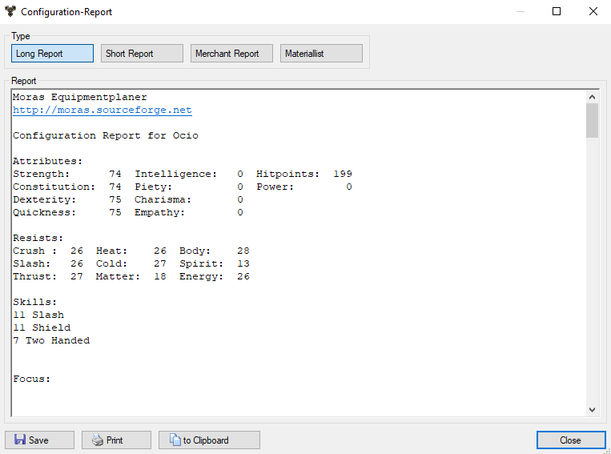

Report

A summary of the configuration in text form is published here.
There are 4 templates available for generating the report:
- Long report: A detailed version of the configuration
- Short report: An abbreviated version of the long report.
- Trader report: A list of all items that the bane wizard should create.
In addition, the required raw materials are also listed.
- Material list: All materials needed by the band wizard for production
are listed.
The report thus created can be saved in a file, printed, or copied to the
cache.